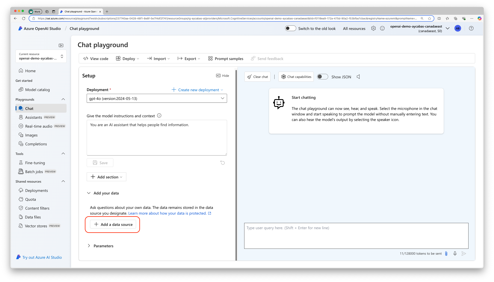
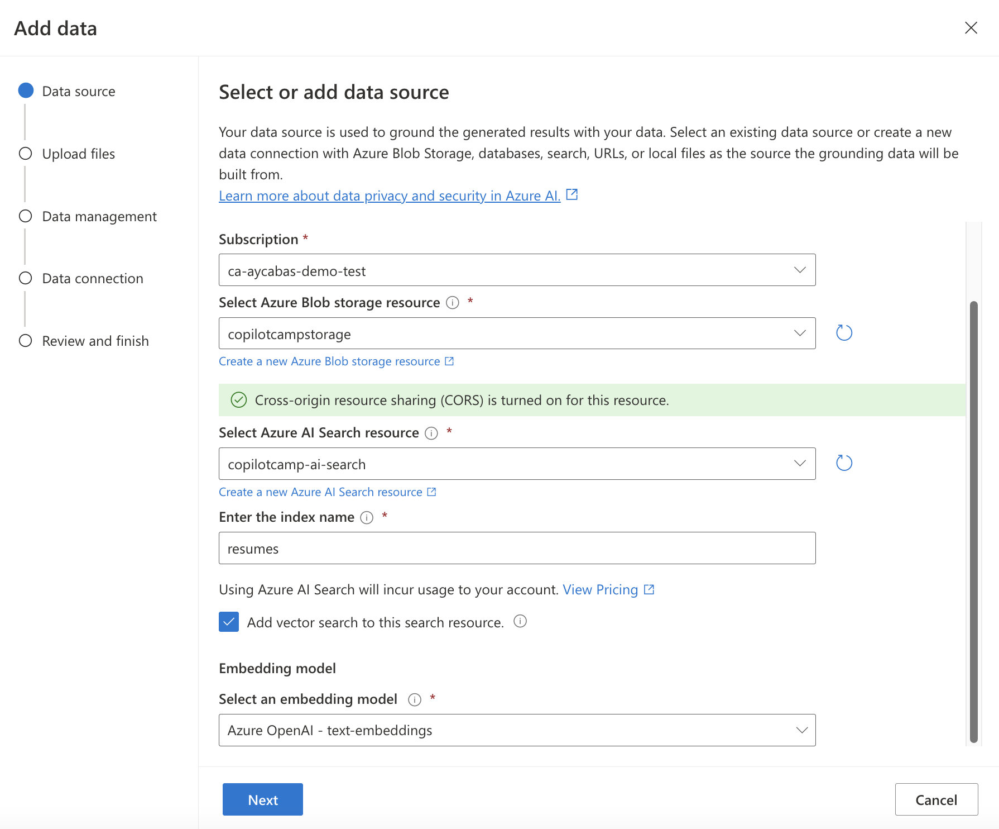
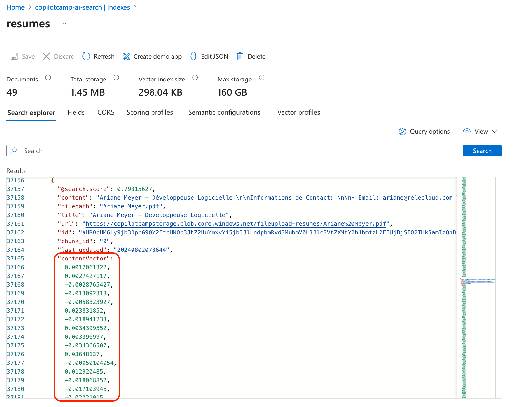

ラボ BTA2 - Azure AI Search でデータをインデックス化する
このラボでは、カスタムエンジンエージェントで Retrieval-Augmented Generation (RAG) を有効化し、Azure AI Search と連携してデータをチャットで活用できるようにします。
このラボで行うこと:
- Retrieval-Augmented Generation (RAG) とは何かを学ぶ
- Azure リソースをセットアップする
- ドキュメントを Azure AI Search にアップロードする
- カスタムエンジンエージェントを Vector Search に対応させる
- アプリの実行とテスト方法を学ぶ
Azure OpenAI と Teams AI library を使用してカスタム AI モデルとオーケストレーションを備えた Custom エンジン エージェントを構築したい場合は、これらの ラボ を実施してください
はじめに
前の演習では、カスタムエンジンエージェントを作成し、AI チャットボット Career Genie の動作を定義するプロンプトをカスタマイズしました。本演習では、履歴書のコレクションに対してベクター検索を適用し、求人要件に最も適した候補者を見つけます。Career Genie でベクター検索を有効にするため、「Microsoft Foundry on your data」機能を使用して次を行います。
- Azure AI Search にインデックスを作成する
- 履歴書 (PDF) のベクター埋め込みを生成する
- データをチャンクに分割し Azure AI Search にアップロードする
最後に、カスタムエンジンエージェントを Azure AI Search と統合し、データをチャットで検索して最適な結果を取得します。
Retrieval-Augmented Generation (RAG) とは?
Retrieval-Augmented Generation (RAG) は、言語モデルが生成する回答の品質を向上させる AI テクニックです。簡単な例で説明しましょう。
スマートアシスタントがあり、質問に答えを書いてくれるとします。ただし、このアシスタントは常に十分な知識を持っているとは限りません。そこで RAG を使うと、アシスタントが大量のドキュメントや動画、画像などから情報を検索 (Web 検索のように) し、その情報を使ってより正確な回答を作成できます。
RAG は次の 2 つのステップを組み合わせます。
- Retrieval: 大量のデータから関連情報を検索する
- Generation: 取得した情報を使って詳細で正確な回答を生成する
これにより、RAG は質問応答、記事作成、調査支援などで有用な、情報豊富で実用的な回答を提供できます。
RAG について詳しくは Doodle to Code のビデオをご覧ください。
Vector Search を利用するメリット
Vector Search は、単なるキーワード一致ではなく「意味」に基づいて情報を高速かつ正確に検索する高度な手法です。数値ベクトルを用いてクエリと類似するコンテンツを見つけるため、次のようなケースに強みがあります。
- 意味・概念の類似性: 異なる単語でも同じ概念をマッチ (例: 「pastry」と「croissant」)
- 多言語コンテンツ: 別言語でも同等の内容を検出 (例: 英語の「pastry」とドイツ語の「gebäck」)
- 複数のコンテンツ形式: 文章と画像など異なる形式を横断検索
Vector Search の仕組みは次のとおりです。
- テキストをベクトルに変換: 単語や文を意味を表す数値ベクトルに変換
- ベクトルを保存: 専用データベースに効率的に保存
- ベクトルで検索: クエリもベクトル化し、意味的に近いベクトルを検索
例えば「how to bake a cake」と検索すると、「cake recipes」や「baking tips」など、同じフレーズがなくても関連文書を見つけられます。大規模データセットで特に効果的です。
要するに、Vector Search は言葉の背後にある意味に注目し、より適切で関連性の高い検索結果を提供します。
演習 1: Azure リソースのセットアップ
開始前に Azure サブスクリプションの前提条件 を完了しておいてください。
手順 1: Azure AI Search サービス リソースを作成する
Azure AI Search とは?
Azure AI Search (旧 Azure Cognitive Search) は、ユーザー所有のコンテンツに対してスケールアウト可能な安全な情報検索を提供し、従来型および生成 AI 検索アプリケーションをサポートします。作成後は次の機能を利用できます。
- ベクター検索、全文検索、ハイブリッド検索用の検索エンジン
- データチャンク化とベクター化を統合したリッチなインデクシング
- ベクタークエリ、テキスト検索、ハイブリッドクエリ用の豊富なクエリ構文
- Azure AI サービスおよび Azure OpenAI との統合
- 任意のブラウザーで Azure Portal を開きます。
- Create a resource を選択し、
Azure AI Searchを検索して選択し、Create をクリックします。 - 次を入力して Review + Create を選択します。
- Subscription: Azure AI Search 用の Azure サブスクリプション
- Resource group: 以前 Azure OpenAI 用に作成したリソースグループ
- Name:
copilotcamp-ai-searchなどわかりやすい名前 - Location: インスタンスのリージョン
- Pricing Tier: Basic
作成が完了したらリソースを開き、Overview で Url をコピーして保存します。続いて Settings の Keys タブを開き、Primary admin key をコピーして保存してください。後の演習で必要になります。
手順 2: ストレージアカウント リソースを作成する
- Azure Portal を開きます。
- Create a resource を選択し、
Storage Accountを検索して Create。 - 次を入力して Review、Create の順に選択します。
- Subscription: Azure Storage Account 用のサブスクリプション
- Resource group: 以前作成したリソースグループ
- Name:
copilotcampstorageなどわかりやすい名前 - Region: リージョン
- Performance: Standard
- Redundancy: Geo-redundant storage (GRS)
手順 3: text-embedding-ada-002 モデルを作成する
text-embedding-ada-002 とは?
Azure OpenAI の text-embedding-ada-002 モデルは、テキストをその意味を表す数値ベクトルに変換します。これにより、意味ベースのベクター検索が可能になります。多言語・多形式に対応し、Azure AI Search と組み合わせることで、文脈的に最も関連性の高い情報を取得できます。高度な検索ソリューションや自然言語を理解するアプリに最適です。
ブラウザーで Microsoft Foundry を開き、Deployments を選択後、Create a new deployment をクリックします。次を入力して Create を選択します。
- Select a model:
text-embedding-ada-002 - Model version: Default
- Deployment type: Standard
- Deployment name:
text-embeddingsなど覚えやすい名前 - Content Filter: Default
ヒント: Quota がない場合
モデル選択時に No quota available と表示された場合は、次のいずれかで対応してください。
1. 別のバージョンまたは Deployment type を選択
2. クォータの追加申請または既存クォータの調整 を行う
演習 2: Microsoft Foundry Chat Playground でドキュメントを Azure AI Search にアップロードする
fictitious_resumes.zip をダウンロードして解凍してください。
手順 1: ドキュメントを Azure AI Search にアップロードする
-
ブラウザーで Microsoft Foundry を開き、Chat Playground を選択します。Setup セクションで Reset を押し、シェイクスピア風ライティングの例を削除して初期化します。すでに空の状態なら次へ進みます。

-
Add your data → Add a data source を選択します。

-
Upload files (preview) を選択し、以下を入力して Next。
- Subscription: 使用するサブスクリプション
- Select Azure Blob storage resource:
copilotcampstorageを選択 (アクセス許可の確認メッセージが出たら Turn on CORS) - Select Azure AI Search resource:
copilotcamp-ai-search - Enter the index name:
resumesなど (後でINDEX_NAMEに使用) - Add vector search to this search resource にチェック
- Select an embedding model:
text-embeddings
インデックス名は後ほど INDEX_NAME 環境変数で使用するため控えてください。

- Browse for a file で
resumesフォルダー内の PDF を選択し Upload files → Next。 - Search type を
Vector、chunk size を1024(Default)にして Next。 - Azure リソース認証タイプを
API Keyに設定し Next。
インデックス作成には数分かかります。完了したらテストに進みます。
Note
データをインデックス化すると、Chat Playground を閉じたり更新しても Azure AI Search 上にインデックスは残ります。Playground がリセットされ再度 Add your data が必要になった場合でも、既存インデックスを選択すれば再インデックス化は不要です。
手順 2: Microsoft Foundry でデータをテストする
データ取り込みが完了したら、Chat Playground で質問を投げかけてみましょう。
例: 「スペイン語を話せて .NET 経験が最低 2 年ある候補者を提案してください」。
ヒント: データを最大限活用する
ベクター検索を試す前に resumes フォルダーの履歴書を確認し、言語・職種・経験年数・スキルなどを把握しましょう。要件を組み合わせて質問し、検索精度を試してみてください。

手順 3: Azure AI Search でインデックスを確認する
データセットを詳しく確認するには、Chat Playground の Add your data セクションから resumes をクリックし、Azure AI Search のインデックスページへ移動します。

まずベクター情報を表示できるようにします。Resumes インデックスの Fields タブで contentVector にチェックを入れ Save。

次に Search explorer タブを開き、Query options で API version を 2024-11-01-preview に変更し Close。Search を押してデータを表示します。
ヒント: contentVector パラメーターを確認
各ドキュメントには contentVector パラメーターがあり、PDF の数値ベクトルが格納されています。Vector Search はこれを使って最適な結果を特定します。

演習 3: アプリを Azure AI Search と統合する
この演習では、Azure OpenAI のテキスト埋め込みデプロイ名と Azure AI Search のキーおよびエンドポイントを取得しておく必要があります。
手順 1: 環境変数を設定する
Career Genie プロジェクトの env/.env.local.user を開き、次の環境変数を貼り付けます。
AZURE_OPENAI_EMBEDDING_DEPLOYMENT_NAME='<Your-Text-Embedding-Model-Name>'
SECRET_AZURE_SEARCH_KEY='<Your-Azure-AI-Search-Key>'
AZURE_SEARCH_ENDPOINT='<Your-Azure-AI-Search-Endpoint>'
INDEX_NAME='<Your-index-name>'
teamsapp.local.yml を開き、ファイル末尾の uses: file/createOrUpdateEnvironmentFile の下に次のスニペットを追加します。
AZURE_OPENAI_EMBEDDING_DEPLOYMENT_NAME: ${{AZURE_OPENAI_EMBEDDING_DEPLOYMENT_NAME}}
AZURE_SEARCH_KEY: ${{SECRET_AZURE_SEARCH_KEY}}
AZURE_SEARCH_ENDPOINT: ${{AZURE_SEARCH_ENDPOINT}}
INDEX_NAME: ${{INDEX_NAME}}
src/config.ts を開き、config 内に次のスニペットを追加します。
azureOpenAIEmbeddingDeploymentName: process.env.AZURE_OPENAI_EMBEDDING_DEPLOYMENT_NAME,
azureSearchKey: process.env.AZURE_SEARCH_KEY,
azureSearchEndpoint: process.env.AZURE_SEARCH_ENDPOINT,
indexName: process.env.INDEX_NAME,
手順 2: Azure AI Search をデータソースとして設定する
プロジェクトの src/prompts/chat/config.json を開き、completion ブロック内に data_sources を追加します。
"data_sources": [
{
"type": "azure_search",
"parameters": {
"endpoint": "$searchEndpoint",
"index_name": "$indexName",
"authentication": {
"type": "api_key",
"key": "$searchApiKey"
},
"query_type":"vector",
"in_scope": true,
"strictness": 3,
"top_n_documents": 3,
"embedding_dependency": {
"type": "deployment_name",
"deployment_name": "$azureOpenAIEmbeddingDeploymentName"
}
}
}
]
src/prompts/chat/skprompt.txt を開き、次のようにプロンプトを更新します。
You are a career specialist named "Career Genie" that helps Human Resources team for finding the right candidate for the jobs.
You are friendly and professional.
You always greet users with excitement and introduce yourself first.
You like using emojis where appropriate.
Always mention all citations in your content.
Visual Studio Code のターミナルを開き、プロジェクトのルートで次のスクリプトを実行します。
npm install fs
src/app/app.ts を開き、OpenAIModel に次のパラメーターを追加します。
azureApiVersion: '2024-02-15-preview'
src/app/app.ts の先頭に次の import を追加します。
import fs from 'fs';
さらに、src/app/app.ts の ActionPlanner 内の defaultPrompt を次のコードスニペットに置き換えます。
defaultPrompt: async () => {
const template = await prompts.getPrompt('chat');
const skprompt = fs.readFileSync(path.join(__dirname, '..', 'prompts', 'chat', 'skprompt.txt'));
const dataSources = (template.config.completion as any)['data_sources'];
dataSources.forEach((dataSource: any) => {
if (dataSource.type === 'azure_search') {
dataSource.parameters.authentication.key = config.azureSearchKey;
dataSource.parameters.endpoint = config.azureSearchEndpoint;
dataSource.parameters.indexName = config.indexName;
dataSource.parameters.embedding_dependency.deployment_name =
config.azureOpenAIEmbeddingDeploymentName;
dataSource.parameters.role_information = `${skprompt.toString('utf-8')}`;
}
});
return template;
}
手順 3: アプリをデバッグしてデータとチャットする
注意事項: Test Tool ではなくローカルでデバッグ
追加した一部の高度な機能は App Test Tool では正しく動作しない場合があります。以降は Test Tool の代わりに Teams 上でローカルデバッグを行います。
今回は Teams 上で Career Genie をテストします。Visual Studio Code の Run and Debug タブで Debug in Teams (Edge) または Debug in Teams (Chrome) を選択し、デバッグを開始します。ブラウザーで Microsoft Teams が起動したら、アプリの詳細が表示されるので Add をクリックし、チャットを開始してください。
ヒント: ローカルでのテスト
これまで実装した Teams AI ライブラリの機能は Test Tool では正しく動作しないことがあるため、必ず Teams 上でローカルデバッグを行ってください。
質問はデータセットに関連する内容にしましょう。resumes フォルダーの PDF を確認し、データを理解した上で要件を組み合わせて複雑な質問をしてみてください。例:
- スペイン語が話せ、.NET 経験が 2 年以上ある候補者を提案してください。
- 他に適任の候補者はいますか?
- Python 開発経験が 5 年以上ある候補者は誰ですか?
- 7 年以上の経験を持ち、日本語を話せるシニア開発者を提案してください。

おめでとうございます！
Azure AI Search でデータをインデックス化し、カスタムエンジンエージェントに取り込むラボ BTA2 を完了しました! さらに学習したい場合は、このラボのソースコードを Copilot Developer Camp リポジトリ でご覧いただけます。
次は Lab BTA3 - Powered by AI キットでユーザー エクスペリエンスを向上させましょう。「Next」を選択してください。